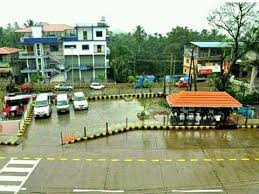
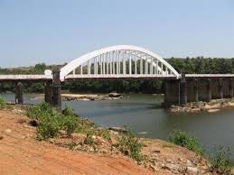
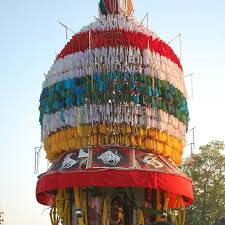

Thirthahalli
Thirthahalli is a quaint little town situated on the banks of river Tunga and is also a taluk headquarters in Shimoga District. Famous for the holy river Tunga and its significance to Indian mythology, Thirthahalli is a popular attraction near Shimoga. Set along the dense forests of the Western Ghats in Karnataka, Thirthahalli is a must-visit place for those who love the serenity of nature and Indian heritage. The area is also known to have produced some of the great Kannada writers such as Kuvempu, Ur Ananthamurty and M K Indira.
Geography

Thirthahalli is located at 13.7°N 75.23°E.[2] It has an average elevation of 591 metres (1938 feet). it is located in the midst of the dense forests of the Western Ghats. For more info
Ancient History
Thirthahalli holds it's place strongly in Indian mythology with the ancient story of Lord Parashurama and his father, Jamadagni. Legend has it that Lord Parashurama chopped off his mother, Renuka's head with an axe as commanded by his father Jamadagni, a great sage.Lord Parashurama then tried to wash off the blood from his axe in various rivers but a stubborn sesame sized stain remained to his axe. It was only when he dipped it in River Tunga did the stain leave his axe. Thus, the people of Thirthahalli believe that a dip in the river can wash away one's sins. Thirthahalli takes its name from the legend and the river Tunga - Thirtha meaning 'holy water' and Halli meaning 'village'. The place is also known as 'Parashurama Thirtha' or 'Rama Thirtha'. There is a stone temple dedicated to Lord Rama near the 'Rama Thirtha'.
Story of ancient Temple

Sri Rameshwara Temple is an ancient temple located on the banks of River Tunga. Located near the 'Parashurama Thirtha', the temple has a Shiva lingam (idol) inside the sanctum is believed to have been placed there by Parashurama himself. It is regularly visited by devotees to give their offerings to Lord Shiva. Enjoy the unique experience of worshipping God alongside mother nature and the cascading River Tunga. If you are looking for a tranquil place of worship and is a great spot to meditate along the banks of River Tunga, the Rameshwara Temple is the place for you. The day Parashurama cleaned his axe to remove the sesame-sized (Ellu in the Kannada language) blood stain was Amavasya (New Moon Day) of Margashira month in the Hindu calendar. That particular day is termed as Ellu-Amavasya (also called Ellamavasye) day and every year on this day a fair termed as Ellu Amavasya Jatre is celebrated at great devotion in Thirthahalli.
Bridge
The Tunga Bridge, also known as the Jayachamrajendra Wadiyar bridge, is a popular tourist attraction in Thirthahalli. Built over the holy Tunga river, it was constructed by the famous architect and scholar Sir M Vishveshwarah. The Tunga bridge is known for its arc-like structure at the top supported by multiple pillars on either side of the bridge. The bridge was completed in 1943, and inaugurated by then Maharaja of Mysore, H. H. Jayachamarajendra Wadiyar and consequently named after him. The bridge now connects the town of Thirthahalli to its neighbouring village Kuruvalli.
Yellamasye Fair
The Ellu Amavasya Jatre will last for more than five days, but three days are very important for the devotees. On the day of Ellamavasye, the Utsava Moorthi (procession idol) of Lord Sri Rameshwara is taken to the river and holy Abhishekam is carried out on the idol in the Parashurama Thirtha. After this, the devotees take a holy dip at this place. On the second day, the temple chariot which is decorated with flowers is pulled along the main street of Thirthahalli. This street is call Car Street (Ratha Beedhi in Kannada language). The big chariot of the temple which occupies almost the entire width of the street, is pulled by devotees and the chariot even climbs a steep gradient on this road. On the third day, the Utsava Moorthi is taken on a Teppa (raft) on holy river Tunga towards the river bank at Kuruvalli and brought back. This celebration is called Teppotsava (raft-festival). On this day, a lot of colorful crackers are lit and also the river banks, Tunga Bridge and Rama Mantap are decorated with lights. This festival normally falls on last half of December or the first half of January. This festival attracts thousands of people from the Karnataka state.